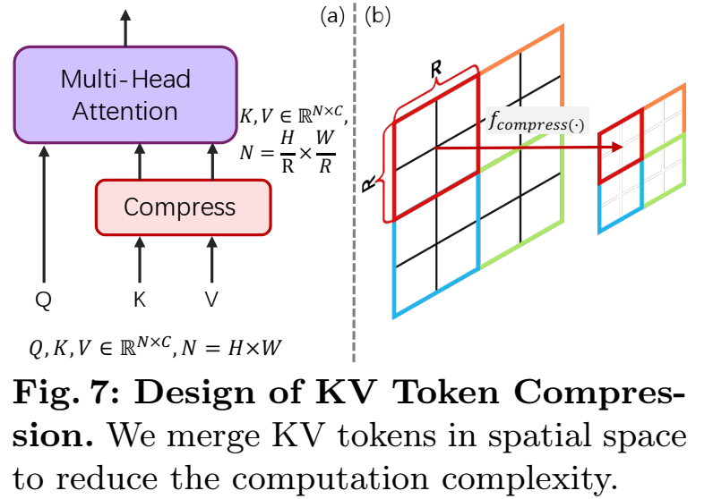
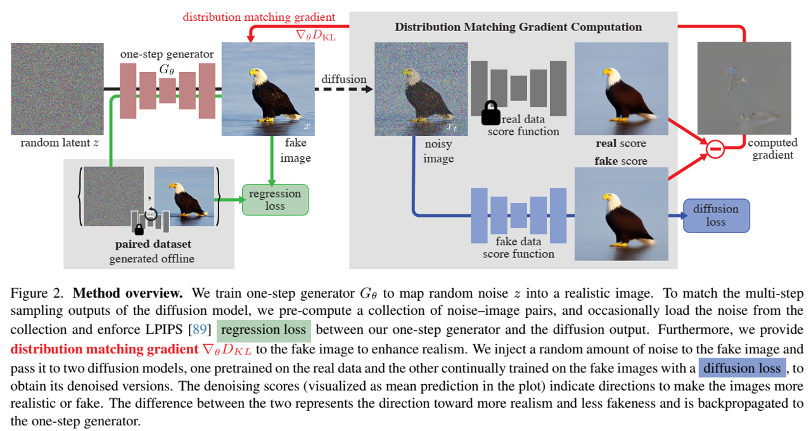
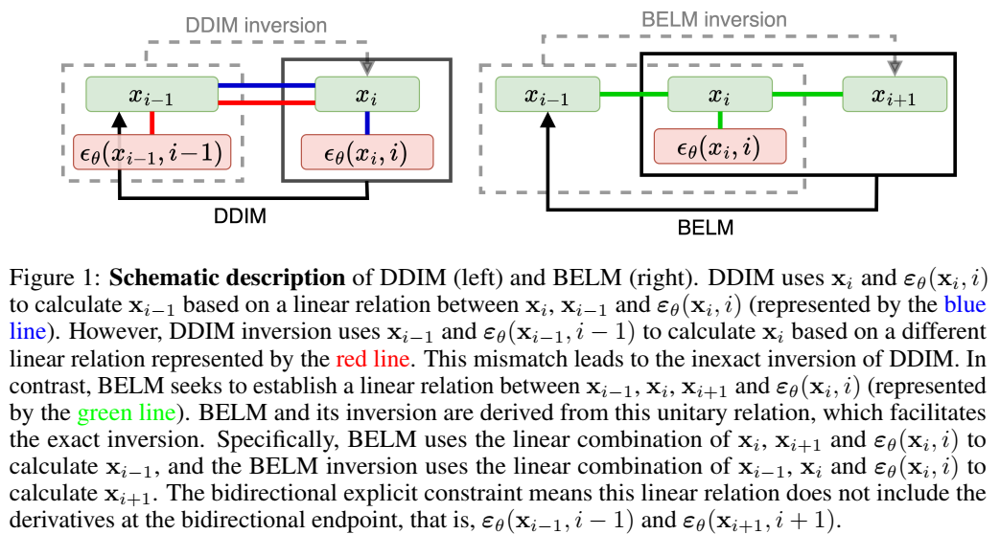
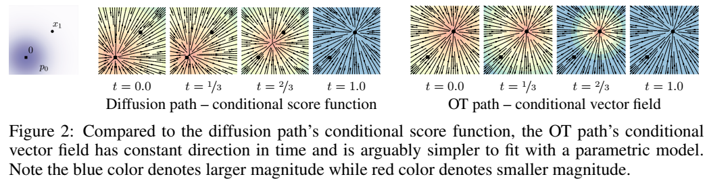
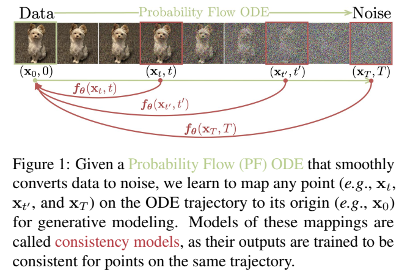

综述二：DiTs及其变体
**DiT（去噪扩散Transformer模型）**是结合了Transformer架构和扩散模型的一类生成模型，特别专注于在扩散框架内的去噪过程。扩散模型通过逐步添加和去除噪声的过程来建模复杂的分布，近年来在生成任务中非常流行。
下面是一些著名的DiT变种，它们在不同方面扩展了原始的DiT模型：
1. DiT（原始版本）
- 关键特性：原始的DiT模型将Transformer架构与去噪扩散过程结合，利用Transformer的注意力机制改进生成质量和训练的可扩展性。
- 目的：生成高质量的图像，并与传统的卷积神经网络相比，提高训练效率。
2. DiT++（增强版DiT）
- 关键特性：DiT++是在原始DiT基础上进行增强的版本，可能包括模型架构的改进、训练方法的优化或额外的正则化技术。
- 目的：通过改进Transformer架构和扩散过程中的噪声调度，提升生成稳定性和性能。
3. DiT-T（文本到图像的DiT）
- 关键特性：DiT-T是专门为文本到图像生成任务设计的变种。它将Transformer的注意力机制与条件扩散模型结合，能够根据文本描述生成图像。
- 目的：结合自然语言处理和图像生成，使得模型可以从文本提示生成高质量的图像。
4. DiT-Vision（视觉Transformer扩散模型）
- 关键特性：DiT-Vision将DiT模型更好地适配到计算机视觉任务中，特别是图像合成和图像修复任务，可能使用类似Vision Transformer（ViT）中的分块注意力机制。
- 目的：优化图像生成任务，如超分辨率、风格迁移和图像到图像的翻译。
5. 条件DiT（cDiT）
- 关键特性：条件DiT（cDiT）将额外的条件信息（如类别标签或潜在代码）引入扩散过程，使生成的图像可以根据不同的条件进行控制。
- 目的：通过引入条件信息，实现对生成过程的更精确控制，例如生成特定对象或风格的图像。
6. DiT-Small
- 关键特性：DiT-Small是DiT的一个精简版本，使用更少的层或参数，同时保留Transformer的核心自注意力机制，计算效率更高。
- 目的：为资源受限的环境提供更高效的DiT版本，支持更快的训练和推理，同时保持较好的生成效果。
7. DiT-Large
- 关键特性：DiT-Large是DiT的一个大规模版本，增加了模型的层数或注意力头的数量，从而能够捕捉更复杂的模式，生成更高质量的图像。
- 目的：在高分辨率图像生成和高质量样本的生成任务中取得更好的表现。
8. DiT-MultiScale
- 关键特性：DiT-MultiScale结合了Transformer的自注意力机制和多尺度处理，扩散过程在多个分辨率或尺度上进行，从而提高生成质量。
- 目的：通过在多个分辨率上逐步精细化图像细节，实现高效的生成。
9. 带有交叉注意力的DiT（Cross-Attention DiT）
- 关键特性：此变种将交叉注意力机制引入DiT模型，允许不同类型的输入数据（如图像和文本）之间进行有效的交互。
- 目的：用于多模态生成任务，如文本到图像的合成，在生成过程中结合不同模态的信息（例如文本提示生成图像）。
10. 带有潜变量建模的DiT
- 关键特性：带有潜变量建模的DiT引入潜在变量，这些潜在变量代表数据的压缩或抽象特征，并将其融入到去噪过程，以提高生成的质量和多样性。
- 目的：通过潜在变量建模更灵活地表示数据，从而改善生成图像的多样性和质量。
11. 带有对比学习的DiT（cDiT-CL）
- 关键特性：在这个变种中，对比学习技术被引入DiT框架，帮助模型在训练时更好地区分相似和不相似的样本，从而提高样本的多样性和生成质量。
- 目的：通过对比学习增强生成样本的多样性，尤其是在生成要求细粒度多样性的任务中（例如生成多样化的场景或对象）。
这些是一些著名的DiT变种。DiT家族结合了Transformer架构和扩散模型的优势，提升了图像合成、条件生成和多模态生成等任务中的表现。每个变种在特定任务中优化了生成过程的不同方面，如计算效率、可扩展性、条件控制等。
模型
PixArt-Σ: Weak-to-Strong Traning of Diffusion Transformer for 4K Text-to_Image Generation (24/03)
论文地址
核心思想：PixArt-Σ，直接生成4K分辨率的DiT。展示了比其前任（predecessor），PixArt-α，显著进展，提供更高保真度的图像，且改进了与文本提示的对齐。PixArt-Σ关键特征是其高效训练。利用基础的PixArt-α预训练，通过更高质量的数据，从“弱”基准进化到“强”模型，该过程称之为“弱到强训练”（weak-to-strong）。PixArt-Σ的进展有两个方面：（1）高质量训练数据：结合高质量图像数据，配对更高精度和细节的图像字幕。（2）高效标记压缩：在DiT框架中提出一种新的压缩键和值的注意力模块，显著改进效率，并促进超高分辨率图像生成。由于这些改进，PixArt-Σ使用比现有文本到图像扩散模型，如SDXL（2.6B参数）和 SD Cascade（5.1B参数），显著更小的模型大小（0.6B参数），取得优越的图像质量和用户提示遵循能力（user prompt adherence capabilities）。此外，PixArt-Σ生成4K图像的能力支持创建高分辨率海报和墙纸，有效地促进了电影和游戏等行业高质量视觉内容的生产。

One-step Diffusion with Distribution Matching Distillation (23/11)
论文地址
核心思想：扩散模型生成高质量图像，但需要大量前向传递。分布式匹配蒸馏（DMD，Distribution Matching Distillation），在最小的影响图像质量下，将扩散模型变换到一步图像生成器（one-step image generator）的过程。强制一步图像生成器在分布水平上匹配扩散模型，通过最小化一个近似KL散度，其梯度可以表示为2个分数函数之间的差异，其中一个是目标分布和另一个是由一步生成器产生的合成分布。分数函数参数化为两个在各自分布上分开训练的扩散模型。结合与多步扩散输出的大规模结构相匹配的简单回归损失，该方法超越所有发布的几步（few-step）扩散方法。利用FP16推理，可以在现代硬件上以20FPS生成图像。

BELM: Bidirectional Explicit Linear Multi-step Sampler for Exact INversion in Diffusion Models (24/10)
论文地址
核心思想：扩散模型采样的反演旨在找到样本的相应初始噪声，在各种任务中起着至关重要的作用。最近，已经提出了几种启发式精确反演采样器，以无需训练的方式解决不精确反演问题。然而，这些启发式采样器的理论性质仍然未知，它们的采样质量往往很差。本文介绍了一种精确反演采样器的通用公式，即双向显式线性多步（BELM）采样器，其中包括所有先前提出的启发式精确反演采样器作为特例。BELM公式是通过整合双向显式约束，从变步长变公式线性多步方法中推导出来的。我们强调这种双向显式约束是数学精确反演的关键。我们系统地研究了BELM框架内的局部截断误差（LTE），并表明现有的精确反演采样器的启发式设计产生了次优LTE。因此，我们通过LTE最小化方法提出了最优BELM（OBELM）采样器。我们进行了额外的分析，以证实所提出的最优采样器的理论稳定性和全局收敛性。综合实验表明，我们的O-BELM采样器在实现高质量采样的同时建立了精确的反演特性。图像编辑和图像插值的其他实验突出了O-BELM在不同应用中的广泛潜力。

相关模型
Flow Matching for Generative Modeling (22/10)
论文地址
核心思想：一种新的生成建模范式，构建在连续正则化流（CNFs, Continuous Normalizing Flows）上，允许在前所未有的规模上训练。具体地，提出流匹配（FM，Flow Matching）概念，一种无需模拟（simulation-free）的训练CNFs的方法，该方法基于固定条件概率路径（fixed conditional probability paths）的回归向量场（regressing vector fields）。流匹配与一般高斯概率路径族相兼容，用于噪声和数据样本之间的变换，其将现有扩散路径作为特定实例。有趣的是，我们发现，使用具有扩散路径的FM可以为训练扩散模型提供更稳健和稳定的替代方案。而且，流匹配为训练其他、非扩散概率路径的CNFs打开了大门。一个特别有趣的例子是使用最优传输位移插值（OT，Optimal Transport Displacement interpolation）来定义条件概率路径。这些路径比扩散路径更高效，提供更快的训练和采样，并产生更好的泛化。在ImageNet上使用流匹配训练CNF，在似然和采样质量两者上，带来比基于扩散的方法持续更好的性能，并且允许使用现成的（off-the-shelf）数值ODE求解器快速可靠地生成样本。

Consistency Models (23/03)
论文地址
核心思想：扩散模型极大地推动了图像、音频和视频生成领域的发展，但它们依赖于导致生成速度缓慢的迭代采样过程。为了克服这一限制，我们提出了一致性模型，这是一类新的模型，它通过将噪声直接映射到数据来生成高质量样本。它们在设计上支持快速的一步生成，同时仍允许多步采样以计算换取样本质量。它们还支持零样本数据编辑，例如图像修复、着色和超分辨率，而无需对这些任务进行明确的训练。一致性模型可以通过提炼预先训练的扩散模型来训练，也可以作为独立的生成模型来训练。
